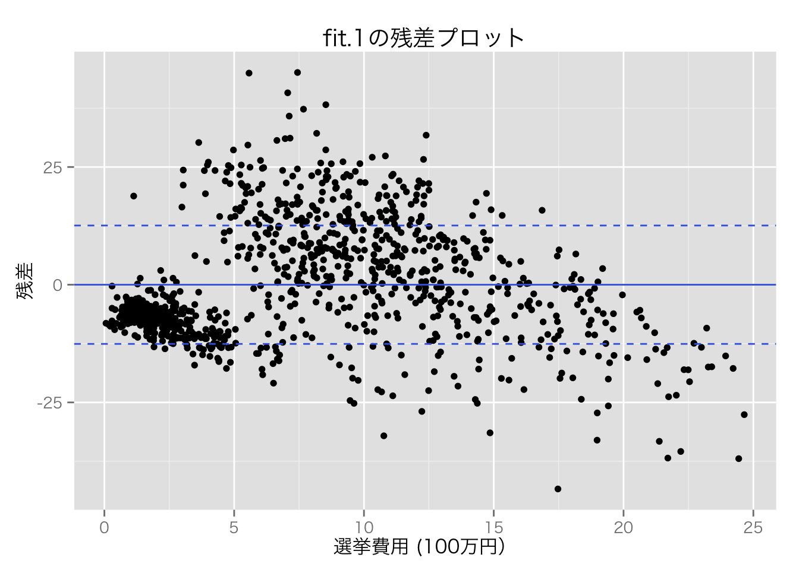
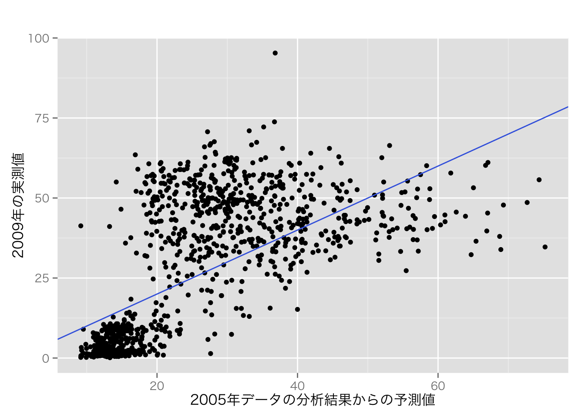
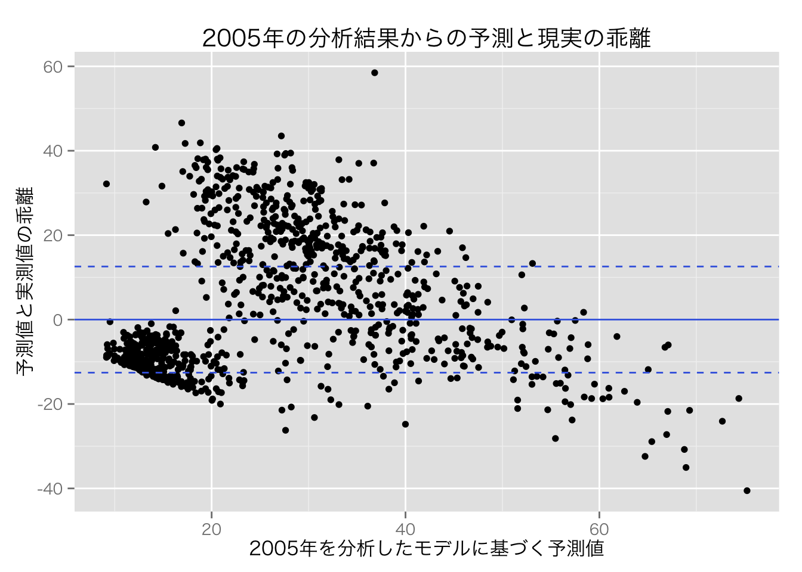
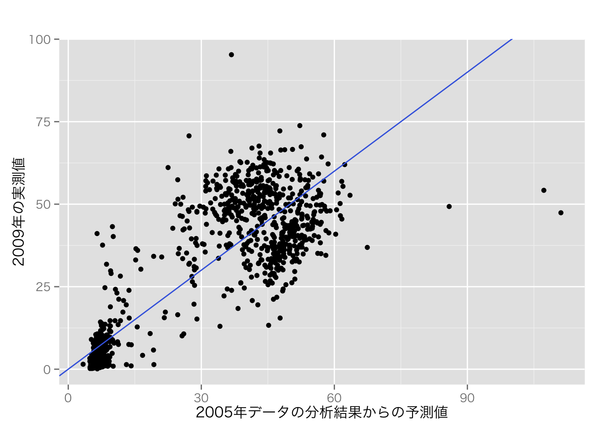
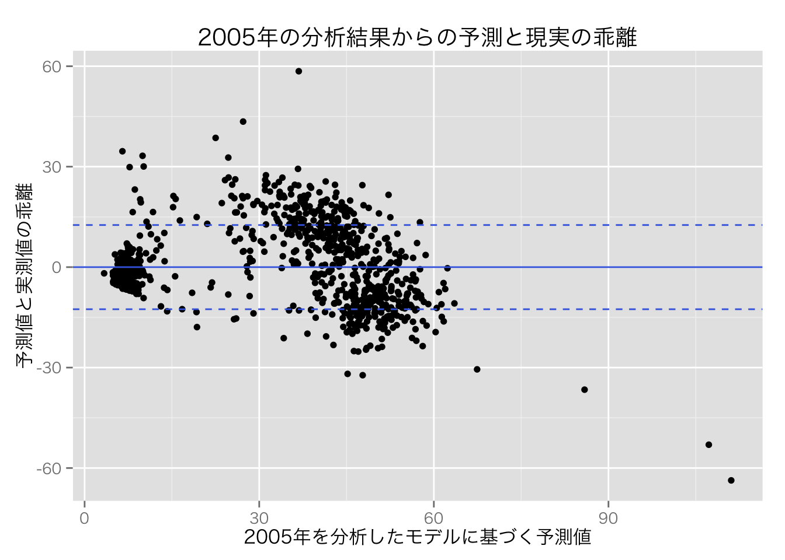
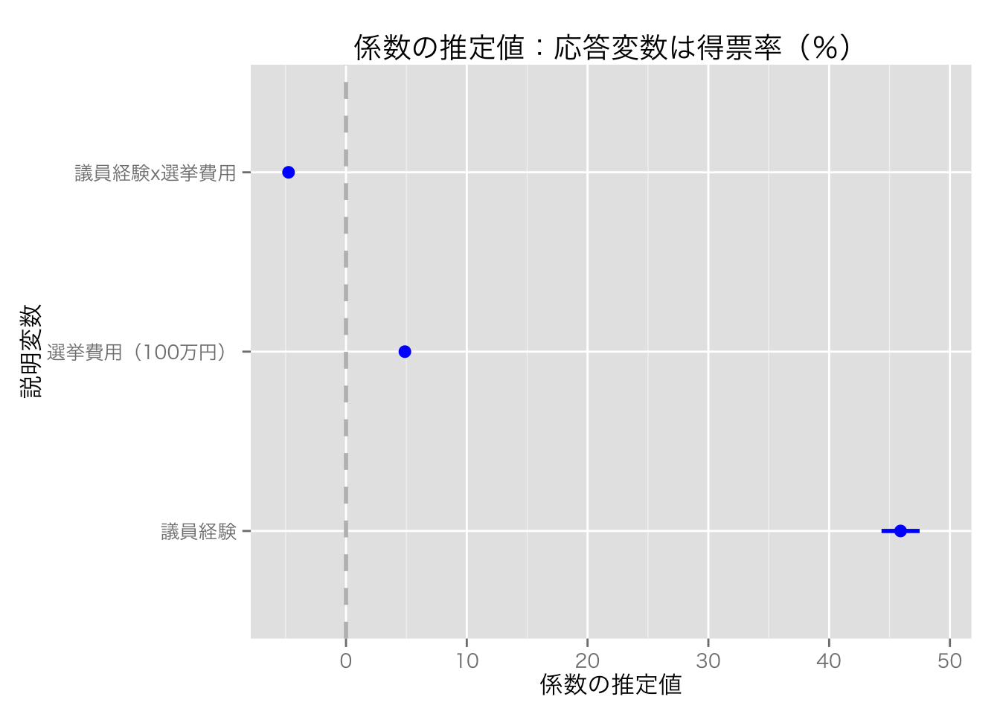
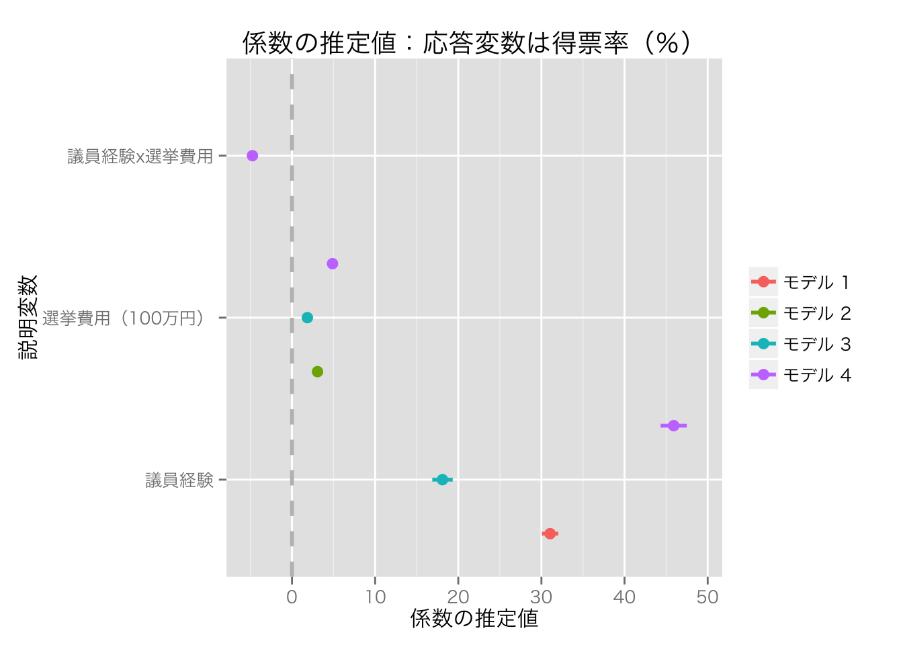

まず、必要なパッケージを読み込む（順番に注意：armをcoefplotより先に読む）。
library("foreign")
library("dplyr")
library("arm")
library("coefplot")
library("ggplot2")
## Windows ユーザは次の行をコメントアウト
theme_set(theme_gray(base_size = 12, base_family = "HiraKakuProN-W3"))説明のために『Stataによる計量政治学』（浅野正彦, 矢内勇生. 2013）で使用されているデータ（hr96-09.dta） を使う。 まず、このデータを読み込む（データへのパスは各自の状況に応じて変えること。ここでは、R Studioのプロジェクトを利用していて、プロジェクトが存在するフォルダ内にdata という名前のフォルダがあり、その中にデータセットが保存されていると仮定している）。
HR <- read.dta("data/hr96-09.dta")
#head(HR)
#tail(HR)衆議院議員経験があることを表すダミー変数と、自民党ダミー、民主党ダミー、 選挙費用を100万円単位で測定する変数を作る。
HR <- mutate(HR,
experience = as.numeric(status == "incumbent" | status == "moto"),
ldp = as.numeric(party == "LDP"),
dpj = as.numeric(party == "DPJ"),
expm = exp / 10^6)2005年と2009年の結果だけ抜き出したデータフレームを、それぞれHR05, HR09として保存する。 （本来はmi() などで欠測値を推定すべきだが、説明を単純化するために、今回は） また、完全データだけ残す。
HR05 <- HR %>%
filter(year == 2005) %>%
na.omit()
HR09 <- HR %>%
filter(year == 2009) %>%
na.omit()fit.1 <- lm(voteshare ~ expm, data = HR05)
display(fit.1)## lm(formula = voteshare ~ expm, data = HR05)
## coef.est coef.se
## (Intercept) 9.12 0.71
## expm 2.61 0.07
## ---
## n = 985, k = 2
## residual sd = 12.57, R-Squared = 0.57sigma.hat.1 <- summary(fit.1)$sigma
HR05$res.fit.1 <- fit.1$residuals
res.plot <- ggplot(HR05, aes(x = expm, y = res.fit.1)) + geom_point()
res.plot <- res.plot +
geom_hline(yintercept = 0, color = "royalblue") +
## +- 1sd を点線で示す
geom_hline(yintercept = c(sigma.hat.1, -sigma.hat.1),
color = "royalblue", linetype = "dashed") +
labs(x = "選挙費用 (100万円）", y = "残差")
print(res.plot + ggtitle("fit.1の残差プロット"))
予測値を使ってモデルを評価することもできる。 以下のような手続きでモデルを評価する
回帰式が真実に近いほど、予測値は観測値に近づく（ただし、データ生成過程に内在的なばらつきは縮まらない）はず。
例として、
比較のため、求めた予測値と実測値の関係を散布図にしてみよう。
HR09$pred.1 <- predict(fit.1, new = HR09)
HR09 <- mutate(HR09, pred.err.1 = voteshare - pred.1)
p.pred.1 <- ggplot(HR09, aes(x = pred.1, y = voteshare)) +
geom_point() +
geom_abline(intercept = 0, slope = 1, color = "royalblue") +
labs(x = "2005年データの分析結果からの予測値", y = "2009年の実測値")
print(p.pred.1 + ggtitle(""))
縦軸を予測値と実測値のズレにした図を作ろう。
p.pred.err.1 <- ggplot(HR09, aes(x = pred.1, y = pred.err.1)) +
geom_point() +
geom_hline(yintercept = 0, color = "royalblue") +
geom_hline(yintercept = c(sigma.hat.1, -sigma.hat.1),
color = "royalblue", linetype = "dashed") +
labs(x = "2005年を分析したモデルに基づく予測値", y = "予測値と実測値の乖離")
print(p.pred.err.1 + ggtitle("2005年の分析結果からの予測と現実の乖離"))
これらの図からわかる通り、この上で求めた回帰式は真実の関係をうまく捉えているとは言えないようである。
試しに、キッチンシンクモデルで予測値を求めてみよう。 まず、予測値と実測値の散布図を作る。
sink.1 <- lm(voteshare ~ experience * expm * age * previous * ldp * dpj, data = HR05)
HR09$pred.2 <- predict(sink.1, new = HR09)
HR09 <- mutate(HR09, pred.err.2 = voteshare - pred.2)
p.pred.2 <- ggplot(HR09, aes(x = pred.2, y = voteshare)) +
geom_point() +
geom_abline(intercept = 0, slope = 1, color = "royalblue") +
labs(x = "2005年データの分析結果からの予測値", y = "2009年の実測値")
print(p.pred.2 + ggtitle(""))
次に、予測値と観測値のズレを縦軸にしてみよう。
p.pred.err.2 <- ggplot(HR09, aes(x = pred.2, y = pred.err.2)) +
geom_point() +
geom_hline(yintercept = 0, color = "royalblue") +
geom_hline(yintercept = c(sigma.hat.1, -sigma.hat.1),
color = "royalblue", linetype = "dashed") +
labs(x = "2005年を分析したモデルに基づく予測値", y = "予測値と実測値の乖離")
print(p.pred.err.2 + ggtitle("2005年の分析結果からの予測と現実の乖離"))
このように、キッチンシンクモデルのほうが予測はうまくできそうである。 しかし、どのような理由で応答変数に影響を与えるかがわからない変数は、回帰式に含めないほうがよい。
選挙費用を説明変数、得票率を応答変数とする回帰式を推定する。
選挙費用を1円単位で測定したexp を使った回帰式は、次のように求めることができる。
fit.2 <- lm(voteshare ~ exp, data = HR09)
display(fit.2, digits = 8)## lm(formula = voteshare ~ exp, data = HR09)
## coef.est coef.se
## (Intercept) 7.73521323 0.75659814
## exp 0.00000307 0.00000010
## ---
## n = 1124, k = 2
## residual sd = 16.04179846, R-Squared = 0.48よって、 \[得票率 = 7.74 + 0.00000307 \cdot 選挙費用（1円）+ 誤差\] である。
これに対し、選挙費用を100万円単位で測定したexpm を使うと、次のような結果になる。
fit.3 <- lm(voteshare ~ expm, data = HR09)
## expm という変数をあらかじめ作っていないときは、次のようにする
# fit.2 <- lm(voteshare ~ I(exp / 10^6), data=HR09)
display(fit.3)## lm(formula = voteshare ~ expm, data = HR09)
## coef.est coef.se
## (Intercept) 7.74 0.76
## expm 3.07 0.10
## ---
## n = 1124, k = 2
## residual sd = 16.04, R-Squared = 0.48よって、 \[得票率 = 7.74 + 3.07 \cdot 選挙費用（100万円）+ 誤差\] である。
これらの2つの回帰式の内容は、実質的にはまったく同じである。 どちらがわかりやすい？
\(z\)値で標準化した変数を使って回帰分析を行ってみよう。 変数\(x\)の\(z\)値は、 \[z_x=\frac{x - \bar{x}}{u_x}\] で求められる。ただし、\(u_x\)は\(x\)の不偏標準偏差である。
例として、選挙費用（測定単位：100万円）を標準化し、得票率を説明してみよう。
HR09 <- mutate(HR09,
z.expm = (expm - mean(expm, na.rm = TRUE)) / sd(expm, na.rm = TRUE))
summary(HR09$z.expm)## Min. 1st Qu. Median Mean 3rd Qu. Max.
## -1.2220 -0.8652 -0.2619 0.0000 0.5985 3.8490これで、expm の\(z\)値z.expmが得られた。この変数を利用して回帰式を求める。
fit.4 <- lm(voteshare ~ z.expm, data = HR09)
display(fit.4)## lm(formula = voteshare ~ z.expm, data = HR09)
## coef.est coef.se
## (Intercept) 26.53 0.48
## z.expm 15.35 0.48
## ---
## n = 1124, k = 2
## residual sd = 16.04, R-Squared = 0.48この結果は、選挙費用（100万円）が1標準偏差増えるごとに、得票率が平均して15.35ポイント上昇することを示している。 切片の26.53は、選挙費用が平均値をとったときの得票率の予測値（平均値）である。
議員経験と選挙費用で得票率を説明するモデルを考える。 回帰式を求めると、
fit.5 <- lm(voteshare ~ experience * expm, data = HR09)
display(fit.5)## lm(formula = voteshare ~ experience * expm, data = HR09)
## coef.est coef.se
## (Intercept) -2.07 0.72
## experience 45.91 1.58
## expm 4.87 0.16
## experience:expm -4.76 0.21
## ---
## n = 1124, k = 4
## residual sd = 12.11, R-Squared = 0.70と、なる。このとき、係数の推定値は何を表しているだろうか。 特に、相互作用を表す係数には注意が必要である。
説明変数を中心化してから、同様の回帰式を求めてみよう。
HR09 <- mutate(HR09,
c.experience = experience - mean(experience),
c.expm = expm - mean(expm, na.rm = TRUE))
fit.5.c <- lm(voteshare ~ c.experience * c.expm, data = HR09)
display(fit.5.c)## lm(formula = voteshare ~ c.experience * c.expm, data = HR09)
## coef.est coef.se
## (Intercept) 34.53 0.50
## c.experience 16.81 1.01
## c.expm 2.96 0.11
## c.experience:c.expm -4.76 0.21
## ---
## n = 1124, k = 4
## residual sd = 12.11, R-Squared = 0.70まず、残差の標準偏差と\(R^2\)が説明変数を中心化する前のモデルとまったく同じことを確認してほしい。 これは、変数の中心化を行っても、回帰式の実質的な内容に変化がないことを示している。
次に、係数の意味を考えよう。切片である34.53 が表しているのは、すべての説明変数が平均値をとったときの得票率の予測値である。中心化する前のモデルでは、すべての説明変数が0のとき（非現実的でデータを代表しない値）の予測値が示されていたが、説明変数を中心化することによって、実質的に意味のある切片（データを代表するケースの予測値）を得ることができた。
c.experience の係数は、選挙費用が平均値のとき、議員経験がある候補者のほうが、議員経験がない候補者より16.81ポイント高い得票率を得ると期待されることを示す。中心化する前のモデルでは選挙費用が0の候補者（そのような候補者は存在しない！）の傾きが示されていたのに対し、ここではデータ全体を代表する傾きが示されている。
c.expmの係数は、議員経験が平均値のとき、選挙費用を1単位（100万円）増やすごとに得票率が平均2.97ポイント上昇することが期待されることを示す。中心化する前のモデルでは議員経験がない候補者の傾きが示されていたのに対し、ここではデータ全体を代表する傾きが示されている。
そして、c.experienceとc.expmの交差項の係数は、議員経験がある候補者とない候補者の間には、選挙費用1単位が得票率に与える影響（傾き）の差が4.76であることを示す。この値は、中心化する前のモデルと同じである。
Rで自然対数に変換するにはlog() を、10を底とする対数に変換するにはlog10() を使う。 その他の値\(b\)を底とするxの対数はlog(x, base=b) で求めることができる。
対数変換した変数を回帰分析で利用するときは、事前に変数を変換してもよいが、分析と同時に変換することもできる。たとえば、次のようにする。
fit.6 <- lm(log(voteshare) ~ expm, data = HR)
display(fit.6)## lm(formula = log(voteshare) ~ expm, data = HR)
## coef.est coef.se
## (Intercept) 1.76 0.02
## expm 0.14 0.00
## ---
## n = 5480, k = 2
## residual sd = 0.86, R-Squared = 0.45係数の値を元の測定単位に戻したいときは、exp() で計算すればよい。
exp(coef(fit.6)[-1]) - 1## expm
## 0.1455751回帰分析の結果を表にするには、stargazerパッケージ を使うのが楽（star が鬱陶しいが・・・）。 詳細は、Jake Russのウェブサイト を参照。
ggplotでキャタピラプロットを作る方法は既に説明したが、Jared Lander が作ったcoefplot パッケージも利用できる。
model.1 <- lm(voteshare ~ experience, data = HR09)
model.2 <- lm(voteshare ~ expm, data = HR09)
model.3 <- lm(voteshare ~ experience + expm, data = HR09)
model.4 <- lm(voteshare ~ experience * expm, data = HR09)
## coefplotを使ってキャタピラプロットを作る
## 1つのモデルを図示するとき
coefplot(model.4, intercept = FALSE,
title = "係数の推定値：応答変数は得票率（％）",
xlab = "係数の推定値", ylab = "説明変数",
newNames = c(experience = "議員経験", expm = "選挙費用（100万円）",
"experience:expm" = "議員経験x選挙費用"))
## 複数のモデル2
multiplot(model.1, model.2, model.3, model.4,
intercept = FALSE, numberAngle = 0,
title = "係数の推定値：応答変数は得票率（％）",
xlab = "係数の推定値", ylab = "説明変数",
newNames = c(experience = "議員経験", expm = "選挙費用（100万円）",
"experience:expm" = "議員経験x選挙費用")) +
scale_color_discrete(name = "", labels = paste("モデル", 1:4))
この程度の修正で満足いく図ができるなら、coefplot() やmultiplot() を使うのが手っ取り早いが、さらなる微調整をしたいならggplot2のgeom_pointrage() などを使って自分で作図する方が楽である。